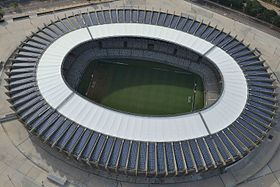

Estádio Governador Magalhães Pinto
| Mineirão Estádio Governador Magalhães Pinto |
|
|---|---|
| Sisbrace:  Fotografia aérea do Mineirão [2] |
|
| Nomes | |
| Nome | Estádio Governador Magalhães Pinto |
| Apelido | Mineirão Gigante da Pampulha ' |
| Características | |
| Local | Belo Horizonte, MG, Brasil |
| Gramado | Grama natural (105 x 68 m) |
| Capacidade | 61.846 espectadores[3] |
| Construção | |
| Data | 1964 e 1965 |
| Custo | R$ 670 milhões [4] |
| Inauguração | |
| Data | 5 de setembro de 1965 (52 anos) 3 de fevereiro de 2013 (reinauguração) |
| Partida inaugural | Seleção Mineira 1x0 River Plate Cruzeiro 2x1 Atlético/MG (reinauguração) |
| Primeiro gol | Buglê (Seleção Mineira) Anselmo Ramon (Cruzeiro) (reinauguração) |
| Recordes | |
| Público recorde | 132.834 pessoas[5] |
| Data recorde | 22 de junho 1997 |
| Partida com mais público | Cruzeiro EC 1x0 Villa Nova(final do campeonato mineiro) |
| Outras informações | |
| Remodelado | 2010-2012 |
| Fechado | 6 de junho de 2010 a 21 de dezembro de 2012 (reforma) |
| Administrador | Governo de Minas Gerais e Minas Arena |
| Arquiteto | Eduardo Mendes Guimarães Júnior e Gaspar Garreto BCMF, GPA&A, GMP (reforma)[6] |
O Estádio Governador Magalhães Pinto, mais conhecido como Mineirão, é um estádio de futebol localizado em Belo Horizonte, Minas Gerais, Brasil. Inaugurado em 1965, é o quinto maior estádio do Brasil, já tendo sediado cinco finais da Copa Libertadores, uma Copa Intercontinental e escolhido como uma das sedes da Copa do Mundo FIFA de 2014. Em 2003, foi tombado pelo Conselho Deliberativo do Patrimônio Cultural do Município de Belo Horizonte.[7]
Em junho de 2014, tornou-se primeiro estádio brasileiro e o segundo do mundo a conquistar a categoria máxima de certificação ambiental Leadership in Energy and Environmental Design, concedida pelo Green Building Council Institute.[8]
O Mineirão ficou marcado como o palco da maior derrota da Seleção Brasileira de Futebol, uma goleada de 7 x 1 da Alemanha na semifinal da Copa do Mundo FIFA de 2014, que ficou conhecida como Mineiraço.[9]
O estádio é parte do Conjunto Arquitetônico da Pampulha, projetado por Oscar Niemeyer sob encomenda do prefeito Juscelino Kubitschek e construído entre 1942 e 1944. Em 17 de julho de 2016, o local passou a ser considerado um Patrimônio da Humanidade após reunião de membros da Unesco em Istambul, na Turquia.[10]
Índice
História[editar | editar código-fonte]
Projeto[editar | editar código-fonte]
O projeto de construção do Mineirão antecede a sua inauguração em mais de 25 anos. Na década de 1940, começaram movimentos tímidos, envolvendo dirigentes, empresários, atletas e jornalistas. A ideia era construir em Belo Horizonte um campo que acompanhasse a evolução do futebol mineiro. Os três principais times da capital mineira possuíam seus estádios, mas estes eram acanhados, desconfortáveis e já não suportavam a demanda dos torcedores. O Estádio Otacílio Negrão de Lima (Estádio da Alameda, na Avenida Francisco Sales), do América, o Estádio Antônio Carlos (localizado na Avenida Olegário Maciel), do Atlético, e o Estádio Juscelino Kubitschek (localizado na Avenida Augusto de Lima), do Cruzeiro não suportavam mais do que 15 mil espectadores. O Atlético, time das camadas mais populares da cidade, planejava construir um estádio para 30 mil pessoas. Após o título de "Campeão dos Campeões do Brasil", em 1937, o projeto quase saiu do papel. Mas então descobriu-se uma enorme dívida do clube, obrigando os diretores a lotear e vender os imóveis que o clube possuía na região onde seria construído o estádio, na Avenida Antônio Carlos, próximo ao Aeroporto.[carece de fontes]
No fim dos anos de 1940 o jornalista Canôr Simões Coelho conseguiu com a CBD a inclusão de Belo Horizonte como uma das sedes da Copa do Mundo de 1950. Para isso, o município teria de construir um estádio à altura do evento. O acordo oficial foi assinado pelo prefeito Otacílio Negrão de Lima e o presidente da CBD Rivadávia Correa Meyer. O modesto clube Sete de Setembro ficou encarregado de comandar as obras do novo campo. A construção do Independência era lenta e parecia que não ia ser concluída a tempo da Copa do Mundo. Mas com a intervenção da CBD e da FIFA, a prefeitura de Belo Horizonte assumiu a responsabilidade da construção, e o estádio foi entregue a tempo da partida entre Iugoslávia e Suíça em 25 de junho de 1950, ainda com muitas improvisações. Porém, em pouco tempo a excitação inicial pelo novo estádio foi se acabando, uma vez que os 30 mil lugares disponíveis não atendiam o crescente número de torcedores. O Independência era desconfortável para o público, além de não oferecer boas condições para a imprensa.[carece de fontes]
No início da década de 1950, poucos anos após a abertura do incompleto Independência, já começam as movimentações para a construção de um estádio ainda maior em Belo Horizonte.[11] A primeira delas, iniciada por estudantes de engenharia da UFMG, destacando-se aqui Gil César Moreira de Abreu, consistia no Estádio Universitário, que seria erguido na Pampulha, onde a Universidade era dona de grandes terrenos. Caberia ao reitor ceder o terreno e em seguida obter recursos. Em 1956, o presidente da Federação Mineira de Futebol, Francisco de Castro Cortes propôs a construção do Estádio Municipal, às margens da atual BR-040, próximo ao local onde hoje está situado o BH Shopping.
Os recursos seriam obtidos através da venda de cadeiras cativas. Com o apoio do presidente da República, o ex-governador mineiro Juscelino Kubitschek, Cortes chegou a trazer a Belo Horizonte, alguns dos engenheiros que trabalharam na construção do Maracanã. O então Presidente do Conselho Regional de Desportos, Antonio Abrahão Caram, foi um dos maiores incentivadores da construção daquele que viria a ser o Mineirão, após combater e demonstrar a impraticabilidade do projeto apresentado por Cortes, e colaborar na elaboração do projeto do atual Estádio, trabalho liderado por Benedicto Adami de Carvalho. Justamente em função da importância do papel de Abrahão Caram[12] na proposta de solução financeira, na definição do local e na elaboração do Projeto de Lei para construção do Mineirão, desde 1966 a avenida que leva ao estádio tem o nome de Avenida Antônio Abrahão Caram.[13]
Com o projeto saindo do papel, o então Deputado Estadual Jorge Carone Filho foi o encarregado da apresentação do Projeto de Lei à Assembleia Legislativa do Estado de Minas Gerais, que criaria o Mineirão. Parte dos recursos seria obtida a partir de bilhetes da Loteria Mineira: 10% do valor de cada bilhete vendido seria destinado às obras do estádio. O "Estádio Minas Gerais" foi criado com a lei 1.947 de 12 de agosto de 1959, assinada pelo governador José Francisco Bias Fortes. A lei também previa a criação de uma autarquia que administraria o estádio, a AEMG (que mais tarde viria a tornar-se a ADEMG).
Coube aos arquitetos Eduardo Mendes Guimarães e Gaspar Garreto, a alteração do projeto do antigo Estádio Universitário, que comportaria 30 mil pessoas, para um novo e "gigante" estádio, com capacidade para 100 mil pessoas. O terreno escolhido localizava-se na Pampulha, numa área pertencente à UFMG. O então reitor Pedro Paulo Penido foi favorável à ideia, uma vez que iniciadas as construções do novo campus, o Mineirão serviria como atrativo para povoar a então isolada região. Com a aprovação do ministro da Educação do governo JK, Clóvis Salgado, o comodato entre a UFMG e a AEMG foi assinado em 25 de fevereiro de 1960. Assim, iniciam-se as obras do estádio.
Construção[editar | editar código-fonte]
Quando começaram as obras do estádio, em 1959, engenheiros e operários não tinham certeza de que elas seriam concluídas. Gil César, o administrador da construção, enfrentou crises financeiras, mas soube usar a política em proveito do Mineirão. Apesar do controle extremado dos gastos, as obras enfrentavam, a cada etapa, o esgotamento de recursos. O empréstimo inicial de 100 milhões de cruzeiros evaporou na execução dos primeiros serviços de fundação. Durante um ano e meio, a empreitada seguiu um ritmo lento, trabalhando com equipamento reduzido e com pessoal mínimo indispensável. Enquanto um grupo agia politicamente para modificar leis que possibilitassem a obtenção de recursos e também convencer o governador Magalhães Pinto de bancar a construção, a AEMG procurava adaptar-se à frágil situação financeira.
O novo estádio foi alçado a emblema para a engenharia nacional ao oferecer inúmeros exemplos de evolução na construção civil. A equipe de engenheiros do Mineirão foi ao extremo nos detalhes. Passou o Maracanã por um verdadeiro raio-x, localizando deficiências que não deveriam ser repetidas no campo mineiro. Em 1964, Gil César foi buscar em Tóquio, onde foram erguidas arenas para as Olimpíadas, novidades sobre este tipo de obra. Os profissionais anotaram particularidades e inovações de engenharia. Preocuparam-se até com a qualidade da grama, balisas e outras minúcias.
A grande dúvida que testava engenheiros e operários era quanto à capacidade de se executar uma superestrutura - uma falsa elipse, medindo o eixo maior 275 metros e o menor 217 metros - utilizando equipamento convencional. Para avaliar e suprimir incertezas, foi projetado um mini-Mineirão, chamado de setor experimental 15 (hoje, abrigando a torcida do Atlético) onde um elo de arquibancadas e coberturas seria submetido a todo tipo de prova. Usinas de concreto, correias transportadoras, graus, carregadeiras e lançadeiras foram testadas. A complexidade da obra exigia barras de ferros em comprimentos que a indústria não tinha condições de atender. A solução veio no próprio canteiro de obras, onde engenheiros e operários utilizaram soldas para promover a extensão das barras.
Com recursos disponíveis podia-se contratar mais gente, mas a AEMG esbarrou na falta de pessoal qualificado. Feita uma concorrência pública para fornecimento de mão de obra, constatou-se ser inexequível, pois o preço cobrado - 15 milhões de cruzeiros - era infinitamente alto para o caixa da administração do novo campo. Comprovou-se, no futuro, que o valor pedido pelas empresas daria para construir um Mineirão e meio. Na prestação de contas, o "gigante da Pampulha" consumira um total de 10 milhões de cruzeiros. Diante da inexistência de mão de obra especializada disponível, a AEMG promoveu o treinamento de pedreiros, carpinteiros, armadores e outros profissionais. Turmas inteiras foram formadas, e centenas de operários ganharam qualificação para exercer funções especiais. Neste estágio, a administração conseguiu reunir número necessário e indispensável para tocar a obra em ritmo acelerado. Entre agosto de 1964 e julho de 1965, a construção saltou de um único setor (o experimental) para oferecer ao país o mais moderno estádio do mundo.
Para apressar a construção e abreviar o drama do orçamento, Gil César lançou a operação 24 horas por dia, dividindo em três turnos os três mil operários contratados. O serviço não parava um minuto sequer. Do alto do edifício Acaiaca, no centro de Belo Horizonte, via-se um enorme clarão de luz vindo dos lados do futuro Mineirão. A administração passou a gratificar as equipes por produção e criatividade, promovendo uma competição entre os diversos setores da construção. A ideia do "joguinho local" deu tão certo que muitas frentes foram concluídas bem antes do prazo estipulado. O processo de tempo integral permitiu que o estádio fosse entregue à população em oito meses. Mesmo em ritmo alucinante e sob pressão, apenas um trabalhador morreu durante toda a construção da arena.[carece de fontes] 7.200 operários trabalharam na construção.[14] A capacidade original era de 130.000 pessoas.
Primeiros anos[editar | editar código-fonte]
Foi inaugurado em 5 de setembro de 1965, com uma partida entre a Seleção Mineira e o River Plate, da Argentina.[11] Com um público de 73.201, as festividades tiveram direito a música, fogos e paraquedistas.[15] Na partida inicial, o combinado estadual venceu por 1 a 0, com gol do jogador do Atlético, Buglê.[11]
No dia 7 de setembro (data da independência brasileira), foi realizada a primeira partida da Seleção Brasileira no estádio. A equipe do Palmeiras inteira, incluindo comissão técnica e os reservas, vestiram a camisa da seleção, para jogar um amistoso contra a seleção do Uruguai. Os brasileiros venceram por 3 a 0.[11][16]
A primeira equipe a jogar um torneio interestadual oficial no Mineirão foi o Esporte Clube Siderúrgica.[17] Campeões mineiros de 1964, eles inauguraram uma era de grandes torneios nacionais jogados no Mineirão. Na Taça Brasil de 1965, jogaram a decisão da chave central contra o Atlético Clube Goianiense.[18] Tendo vencido o primeiro jogo por 3 a 0, saíram atrás do marcador mas viraram a partida para 3 a 1. Na fase seguinte, a decisão da chave centro-sul, o Siderúrgica sucumbiu ante ao Grêmio Foot-Ball Porto Alegrense, saindo de Porto Alegre derrotados por 3 a 1 e apenas empatando em dois gols no Mineirão.
O primeiro clássico realizado no estádio Mineirão foi pelo campeonato mineiro de 1965. O Cruzeiro vencia o Atlético por 1 a 0 quando, aos 34 minutos do 2º tempo, alguns diretores atleticanos, alegando a marcação de um pênalti irregular, invadiram o campo afirmando que a falta acontecera sobre a linha da área (esquecendo que a mesma faz parte dela). A partida foi encerrada após o Atlético ter vários jogadores expulsos e o Cruzeiro ficou com o título mineiro daquele ano, abrindo a Era Mineirão.[15]
Organizado pela Federação Mineira de Futebol, a história do campeonato pode ser dividida em duas partes: antes e depois da construção do Mineirão, que foi inaugurado em setembro de 1965. A época chamada de Era Mineirão marca o crescimento do time mais jovem da capital, o Cruzeiro, que assumiu um papel de destaque no cenário esportivo nacional após vencer o Santos de Pelé na final da Taça Brasil de 1966 e, em poucos anos, se tornou o clube mineiro com maior número de títulos nacionais e internacionais.[11]
Era Mineirão[editar | editar código-fonte]
O Cruzeiro disputou dois jogos finais da Libertadores no Mineirão, vencendo em 1997 e perdendo 2009. Também disputou no estádio parte das séries finais de 1976 e 1977.[19][20] Em 21 de dezembro de 1976, o Mineirão foi palco da partida final da Taça Intercontinental, disputada entre Cruzeiro e Bayern de Munique. Na época, o título era disputado em duas partidas. No primeiro duelo, na Alemanha, o time da casa venceu por 2 a 0. Com um empate por 0 a 0 no Mineirão, o Bayern se consagrou campeão.[21] O estádio também abrigou três títulos do Cruzeiro na Copa do Brasil, em 1993, 2000 e 2003, e a última conquista do Atlético na Copa Conmebol, em 1997.[15]
Em 12 de agosto de 2003 o estádio foi tombado pelo Conselho Deliberativo do Patrimônio Cultural do Município de Belo Horizonte.[7]
Entre 1996 e 2003, diversas reformas renovaram o Mineirão. Em 1996, o estádio ficou fechado por cinco meses para a troca do gramado. Depois ocorreram substituições dos sistemas de drenagem e irrigação, mais iluminação e placar eletrônico, melhorias nos vestiários, e a instalação de pilares de sustentação na arquibancada para diminuir a vibração das mesmas. Em 2004, por exigência da FIFA para o jogo das Eliminatórias da Copa do Mundo de 2006 entre Brasil e Argentina, todo o setor das arquibancadas superiores foi coberto por cadeiras numeradas.[11] Posteriormente, as arquibancadas inferiores também tiveram cadeiras colocadas em sua extensão. Em junho de 2008, para sediar novamente o maior clássico sul-americano, válido pelas Eliminatórias da Copa do Mundo de 2010, o estádio teve o placar trocado. Foram instalados dois telões de 75 metros quadrados cada.[22]
Reformas para a Copa do Mundo de 2014[editar | editar código-fonte]
Com a escolha do Brasil como país-sede da Copa do Mundo FIFA de 2014, Belo Horizonte, juntamente com Rio de Janeiro, São Paulo, Brasília e Porto Alegre, foi uma das cidades pré-selecionadas para sediar os jogos.[23] Em 2 de fevereiro de 2009 o governo de Minas Gerais apresentou o projeto de modernização do Mineirão. O projeto apresentado assegurou a preservação da fachada original (nos mesmo moldes em que foi realizada a reforma do Estádio Olímpico de Berlim).[24] Em 31 de maio, a Fifa anunciou as 12 cidades sedes da Copa do Mundo de 2014, confirmando a capital mineira como uma delas.[25]
Em 2010, o estádio foi fechado para as reformas necessárias para a Copa. Os últimos eventos no estádio foram o jogo Atlético 0 x 1 Ceará, em 6 de junho,[26] e um show gratuito do Skank em 19 de junho, registrado no CD e DVD Multishow Ao Vivo - Skank no Mineirão.[27] Ainda em 2010, durante as obras de reforma, o estádio teve o processo de rebaixamento do gramado iniciado.[28] O gramado foi rebaixado em 3,4 metros.[29]
A Minas Arena é uma sociedade de propósito específico, constituída pelas construtoras Construcap, Egesa e HAP Engenharia. A sociedade foi responsável pela execução das obras de reforma e modernização do estádio Mineirão, realizadas entre 2010 e 2012, tornando-se responsável pela operação do estádio por 25 anos.[30]
Em 2011, o estádio recebeu a instalação de 166 amortecedores sob a parte superior da estrutura, em substituição às hastes verticais que tinham debaixo de todo anel.[31]
A cobertura do teto do estádio foi ampliada para proteger os assentos de eventuais chuvas durante as partidas. A geral passou por reformas e, assim como ocorreu no Maracanã, foram colocadas cadeiras. Inicialmente, a mudança reduziria a capacidade do Mineirão de 75.783 espectadores para 64.000.[32] Na parte externa, a principal adaptação ficou por conta do transporte, com a ampliação do estacionamento. Fora isso, cerca de 400 ônibus devem abastecer o estádio em dias de jogos. Foi erguida ainda uma esplanada ao redor do estádio, com cerca de 80 mil m² que comporta mais de 65 mil pessoas e abriga eventos.[33]
O Ministério Público Federal (MPF) enviou no dia 5 de junho de 2012, uma recomendação ao Banco Nacional de Desenvolvimento Econômico e Social (BNDES) para que a instituição suspendesse qualquer repasse para as obras de adequação do estádio Mineirão, objetivando a Copa do Mundo de 2014. O MPF queria que os recursos na ordem de R$ 160 milhões fossem liberados apenas após o Tribunal de Contas do Estado (TCE) atestasse que não houvesse irregularidades no projeto.[34]
No dia 9 de Novembro, o Mineirão foi o primeiro estádio da Copa 2014 a receber o plantio do gramado.[35] O valor final das reformas do estádio foi de R$666,3 milhões.[36]
Reinauguração[editar | editar código-fonte]
Depois de quase três anos de obras, o estádio foi reaberto ao público no dia 21 de dezembro de 2012 e tornou-se o segundo estádio da Copa do Mundo de 2014 a ser entregue, depois do Castelão de Fortaleza.[37] O evento oficial contou com a participação da presidente Dilma Rousseff.[38] A reinauguração foi celebrada com um show da banda mineira Jota Quest, realizado em um palco montado na recém construída esplanada do estádio.[39] Cerca de 20 mil pessoas estiveram presentes.[40]
O jogo de reinauguração foi o clássico Atlético contra Cruzeiro em 3 de fevereiro de 2013, na estreia do Campeonato Mineiro. O primeiro gol do "novo Mineirão", foi um gol contra, Marcos Rocha do Atlético, acabou marcando contra sua baliza ao disputar uma bola aérea com o atacante Anselmo Ramon, aos 22 minutos do primeiro tempo, o Cruzeiro venceu a partida pelo placar de 2x1.[41] O público presente na partida foi de 59.968 e o público pagante, aproximadamente 53 mil pessoas, o que gerou a maior renda da história do Mineirão: R$ 3.677.635,00.[29] A renda viria a ser superada em julho na final da Copa Libertadores da América de 2013, onde o Atlético sagrou-se campeão diante do Club Olimpia. A renda foi de R$ 14.176.146,00[42] .
Apesar de recém-entregue, contudo, o primeiro clássico abrigado pelo estádio foi alvo de queixas dos torcedores, que sofreram com falta de luz e água. O governador Antônio Anastasia, no entanto, minimizou a situação dizendo que, até então, só ouvira "elogios".[43]
Eventos importantes[editar | editar código-fonte]
Copa das Confederações[editar | editar código-fonte]
Em 2013, sendo Belo Horizonte uma das sedes da Copa das Confederações, o estádio recebeu três partidas do evento. A primeira partida foi o duelo entre Nigéria e Taiti pelo Grupo B. A equipe africana venceu a seleção amadora do Taiti por 6 a 1 em um jogo que ficou marcado na história pelo gol de Jonathan Tehau - o primeiro gol do país fora da Oceania em um torneio da FIFA.[44] O segundo jogo foi a partida entre Japão e México, pelo Grupo A, que teve vitória mexicano por 2 a 1.[45] O terceiro jogo foi a semifinal entre Brasil e Uruguai, que teve um público total de 57.483 pagantes.[46]
| Data | 1ª equipe | Placar | 2ª equipe | Fase | Público |
|---|---|---|---|---|---|
| 17 de junho | 1 – 6 | Grupo B | 20,187 | ||
| 22 de junho | 1 – 2 | Grupo A | 52,690 | ||
| 26 de junho | 2 – 1 | Semifinal | 57,483 |
Copa do Mundo de 2014[editar | editar código-fonte]
O Mineirão foi uma das principais sedes da Copa do Mundo, com seis partidas que incluem duas na fase eliminatória.[47] Em seu último jogo houve a incrível goleada da Alemanha sobre o Brasil, anfitriões da Copa, ganhando de 7-1, em um evento que ficou conhecido como Mineiraço.
| Data | 1ª equipe | Placar | 2ª equipe | Fase | Público |
|---|---|---|---|---|---|
| 14 de junho | 3 – 0 | Grupo C | 57.174 | ||
| 17 de junho | 2 – 1 | Grupo H | 56.800 | ||
| 21 de junho | 1 – 0 | Grupo F | 57.698 | ||
| 24 de junho | 0 – 0 | Grupo D | 57.823 | ||
| 28 de junho | 1(3) – 1(2) | Oitavas de final | 57.714 | ||
| 8 de julho | 1 – 7 | Semifinal | 58.141 |
Jogos Olímpicos de 2016[editar | editar código-fonte]
Em 2016, o Mineirão foi uma das sedes do Futebol nos Jogos Olímpicos de Verão de 2016, com seis partidas da disputa do torneio feminino e quatro do masculino .
|
|
Não-esportivos[editar | editar código-fonte]
O Mineirão foi sede de inúmeros shows e festivais musicais. Os mais notáveis incluem Kiss em 1983, Menudo em 1985, RBD 2006 e os festivais Pop Rock Brasil e Axé Brasil. O estádio também foi cenário do clipe "É Uma Partida de Futebol", do Skank, gravado antes de um Derby Mineiro válido pelo Campeonato Estadual, em 16 de março de 1997 (o clipe mostra imagens tanto da partida em si quanto de um jogo preliminar organizado pelos músicos para o clipe).[48] Após a reinauguração em 2013, o estádio sediou shows de Elton John, Paul McCartney - a estreia da turnê Out There! Tour -RBD, Beyoncé e Pearl Jam, bem como nova edição do Axé Brasil. A esplanada também abrigou show do Black Sabbath,[49] Foo Fighters, Los Hermanos, Iron Maiden, e os festivais Planeta Brasil 2014 (com participação do Guns N' Roses) e Circuito Banco do Brasil 2014.[50]
Estrutura[editar | editar código-fonte]
A estrutura do estádio é constituída por 88 pórticos de concreto armado, dispostos radialmente em torno de uma elipse. O vão livre entre pórticos, mede 7,5 metros.[51]
O estádio possui dois telões de LED em alta definição de 98 m². Segundo Ricardo Barra, diretor-presidente do consórcio Minas Arena, eles foram fabricados exclusivamente sob encomenda no Japão, pela Sony.[52]
Após as obras para a Copa do Mundo de 2014, sua capacidade foi reduzida para 62.160 torcedores. Com a construção da esplanada o estacionamento foi totalmente remodelado com um total de 2.878 vagas, sendo 1.756 vagas cobertas e 1.122 vagas descobertas.[53]
Usina solar[editar | editar código-fonte]
A Companhia Energética de Minas Gerais (Cemig) e a Minas Arena apresentaram em junho de 2014 a usina solar que funciona no estádio. Foi a primeira vez que um estádio da Copa do Mundo usou este tipo de tecnologia para garantir o próprio fornecimento de energia elétrica, que foi gerada através de placas fotovoltaicas. A usina também conta com uma subestação própria e redes de alimentação conectadas ao sistema da Cemig. A energia extra produzida vai abastecer 1,2 mil residências, em Minas Gerais, visto que apenas 10% da energia gerada é utilizada no abastecimento do estádio.[54]
Alimentação e vestiários[editar | editar código-fonte]
O estádio conta com 60 bares e restaurantes.[53] Antes da reforma de 2010, alimentos também podiam ser conseguidos por 150 ambulantes do lado de fora do Mineirão.[55] Os pratos mais célebres do Mineirão são o feijão tropeiro e o sanduíche de pernil,[56] com o primeiro chegando a ser permitido pela FIFA para a venda na Copa das Confederações e Copa do Mundo.[57][58]
Os vestiários do estádio são equipados, cada um, com 12 chuveiros, spa para oito pessoas com hidromassagens, além de salas para usos diversos, aquecimento e de uso da comissão técnica.[59]
Museu Brasileiro do Futebol[editar | editar código-fonte]
Sob a esplanada, o complexo do Mineirão abriga o Museu Brasileiro do Futebol, que segundo Marco Antônio Herling, presidente da Lusoarenas (empresa contratada pelo Minas Arena, para auxiliar na gestão do estádio) vai focar na história do futebol dos times mineiros.[60]
Sua construção foi dividida em quatro etapas: A primeira delas marcada para o dia 21 de dezembro de 2012, quando o estádio será entregue à população. A segunda na Copa das Confederações. A terceira no fim de 2013 e a última até a Copa do Mundo.[61]
Conjunto Arquitetônico da Pampulha[editar | editar código-fonte]
O Conjunto Arquitetônico da Pampulha, foi projetado por Oscar Niemeyer, sob encomenda do prefeito Juscelino Kubitschek, e construído entre 1942 e 1944. Juscelino desejava desenvolver uma área ao norte da cidade, chamada Pampulha. Encomendou então ao jovem e já reconhecido arquiteto, Oscar Niemeyer o projeto de um conjunto de edifícios em torno do lago artificial da Pampulha: um cassino, uma igreja, uma casa de baile, um clube e um hotel. À exceção do hotel, o conjunto se concretizou com a inauguração em 16 de maio de 1943, nas presenças do presidente Getúlio Vargas e do governador do estado de Minas Gerais, Benedito Valadares.[62] O cassino se tornou o Museu de Arte da Pampulha em 1957.[63]
Em 2013, a prefeitura de BH expressou interesse em candidatar o Conjunto Arquitetônico da Pampulha a Patrimônio Mundial da UNESCO.[64] Uma representante da UNESCO visitou a região em 2015, ano em que a Pampulha era única candidata.[65] Para garantir melhores condições do patrimônio, o MAP receberá uma grande reforma durando dois anos a partir de julho de 2016, e duas praças da região terão seus projetos de paisagismo recuperados.[63] Em 17 de julho de 2016, o local passou a ser considerado um Patrimônio da Humanidade após reunião de membros da Unesco em Istambul, na Turquia.[66]
Estatísticas[editar | editar código-fonte]
O maior público presente em uma partida de futebol, na história do Mineirão, foi em 22 de junho de 1997, no jogo entre Cruzeiro e Villa Nova, válido pela final do Campeonato Mineiro. Com um público total de 132.834 pessoas presentes, registrou-se o recorde do estádio e também do estado de Minas Gerais. O público pagante foi de 74.857 pessoas.[5][67]
A partida de maior público da história da Libertadores da América envolvendo um time brasileiro pertence ao Mineirão: 106 853 pessoas giraram as catracas do estádio para assistirem a segunda partida da final de 1997 entre Cruzeiro e Sporting Cristal do Peru, que resultou na conquista da equipe brasileira pelo placar de 1-0 naquele jogo.[68]
O recorde de público pagante da história do Mineirão foi registrado em 4 de maio de 1969 no clássico entre Cruzeiro e Atlético, com 123.351 pagantes.[69]
Em 2013, após a reforma para atender os padrões da FIFA, no segundo jogo da final da Copa Libertadores da América de 2013, entre Atlético Mineiro e Olímpia, do Paraguai, foi registrada a maior renda da história do futebol sul-americano. Com público pagante de 56.557, a partida rendeu R$ 14.176.000,00. A média de R$ 250 por ingresso. Nesta partida, o Atlético sagrou-se campeão do torneio continental[70] e a "administradora" do estádio Minas Arena ficou com cerca de R$ 6.976.000,00[71] da renda do jogo. No mesmo ano, em 10 de novembro, o recorde de público no "novo Mineirão" foi batido, no jogo pela 33a rodada da Série A do Campeonato Brasileiro. O Cruzeiro goleou o Grêmio por 3 a 0 diante de um público de 58.113 torcedores dos quais 56.854 foram pagantes.[72]
No dia 8 de julho de 2014, na semifinal da copa do mundo FIFA de 2014, quando a Alemanha goleou o Brasil pelo placar de 7 a 1, foi estabelecido um novo recorde com o público pagante de 58.141 pessoas.[73]
Maiores públicos[editar | editar código-fonte]
- Antes da reforma[73]
| Nº | Público | Data | Mandante | Placar | Visitante | Competição |
|---|---|---|---|---|---|---|
| 1 | 132 834[5] | 22 de junho de 1997 | Cruzeiro |
1 – 0 | Villa Nova | Campeonato Mineiro de 1997 |
| 2 | 123 351[69] | 4 de maio de 1969 | Cruzeiro |
1 – 0 | Campeonato Mineiro de 1969 | |
| 3 | 122 534 | 9 de outubro de 1977 | Cruzeiro |
3 – 1 | Campeonato Mineiro de 1977 | |
| 4 | 115 983[69] | 8 de novembro de 1980 | Atlético Mineiro |
1 – 0 | Campeonato Mineiro de 1980 | |
| 5 | 115 142 | 13 de fevereiro de 1980 | Atlético Mineiro |
1 – 0 | Amistoso | |
| 6 | 113 715[21]1 | 21 de dezembro de 1976 | Cruzeiro |
0 – 0 | Copa Intercontinental de 1976 | |
| 7 | 113 479 | 15 de maio de 1983 | Atlético Mineiro |
0 – 0 | Campeonato Brasileiro de 1983 | |
| 8 | 110 432 | 2 de junho de 1968 | Atlético Mineiro |
1 – 2 | Campeonato Mineiro de 1968 | |
| 9 | 109 363 | 15 de dezembro de 1974 | Atlético Mineiro |
1 – 2 | Campeonato Mineiro de 1974 | |
| 10 | 108 935 | 5 de dezembro de 1982 | Atlético Mineiro |
2 – 1 | Campeonato Mineiro de 1982 |
↑1 . Devido ao arrombamento de portões, estima-se que o público presente tenha sido superior ao número de pagantes.[21]
- Após a reconstrução (público pagante)[73]
|
|
||||||||||||||||||||||||||||||||||||||||||||||||||||||||||||||||||||||||||||||||||||||||||||||||||||||||||
Evento musical[editar | editar código-fonte]
O recorde de público presente fora de um partida de futebol, foi em 14 de julho de 2001, na gravação do álbum Preciso de Ti, do grupo de música gospel brasileiro Diante do Trono, onde foram registrados mais de 210.000 pessoas presentes vindas de várias regiões do país e também de outros países no estádio para o evento.[78]
Ver também[editar | editar código-fonte]
Referências
- ↑ «Classificação de estádios de futebol (Sisbrace)». Ministério dos Esportes. 25 de fevereiro de 2017
- ↑ «Ministério do Esporte: Sistema Brasileiro de Classificação de Estádios». 28 de janeiro de 2016. Consultado em 29 de janeiro de 2016
- ↑ http://cdn.cbf.com.br/content/201601/20160122182359_0.pdf
- ↑ «Obras de reforma do estádio Mineirão são concluídas». PINIweb. 25 de Abril de 2013
- ↑ a b c FUSCALDI, Rodrigo (22 de fevereiro de 2012). «Público recorde da história do estádio Mineirão completa 15 anos». Blog do Futebol Mineiro. Globo.com
- ↑ Mineirão
- ↑ a b «DELIBERAÇÃO Nº 106/2003» (PDF). Diário Oficial do Município. Prefeitura Municipal de Belo Horizonte. 21 de outubro de 2003
- ↑ «Mineirão é o primeiro estádio do Brasil a receber premiação máxima em sustentabilidade». Superesportes. 30 de junho de 2014
- ↑ «Brasil sofre goleada da Alemanha em vexame histórico e disputará 3º lugar». G1.com.br. 8 de julho de 2014
- ↑ Thais Pimentel (17 de julho de 2016). «Conjunto da Pampulha ganha título de Patrimônio Mundial da Unesco». G1. Consultado em 17 de julho de 2016
- ↑ a b c d e f MOREIRA, Eugênio (16 de dezembro de 2012). «Dinheiro da loteria, lucro do futebol mineiro». Superesportes
- ↑ Camara dos Vereadores de Belo Horizonte - Projeto de Lei Municipal de 27-Jan-1966
- ↑ Prefeitura de Belo Horizonte – Lei Municipal 1241 de 27-Abr-1966
- ↑ «Curiosidades sobre o Mineirão». Superesportes. Portal Uai. 14 de dezembro de 2012
- ↑ a b c Partidas históricas fizeram a arquibancada do Mineirão tremer, Veja BH
- ↑ «Em 1965, era inaugurado o Estádio Magalhães Pinto, o Mineirão». TN Online. 18 de Maio de 2010
- ↑ Siderúrgica fez 1º jogo oficial no Mineirão
- ↑ RSSSF Brasil - Taça Brasil 1965
- ↑ Equipes Brasileiras nas Finais da Libertadores: Cruzeiro
- ↑ Estudiantes vira sobre o Cruzeiro, cala Mineirão e leva Libertadores
- ↑ a b c «Final do Mundial de Clubes de 1976, no Mineirão, completa 36 anos nesta sexta». Superesportes. Portal Uai. 21 de dezembro de 2012
- ↑ «FOTO: Telão do Mineirão passa por teste». Globoesporte.com. 18 de junho de 2008
- ↑ «Fotos: cidades que lutam para sediar Copa de 2014 entregam projetos». Correio. 16 de janeiro de 2009. Consultado em 16 de março de 2009
- ↑ Copa 2014: projeto do novo Mineirão é apresentado aos membros da Fifa
- ↑ CALIPO, Thales. UOL Esporte. Sem surpresas, Fifa anuncia sedes da Copa do Mundo de 2014
- ↑ Na despedida do Mineirão, Ceará vence Atlético e é vice-líder, iG
- ↑ Skank anuncia show de graça no Mineirão dia 19 de junho, Hoje em Dia
- ↑ Gramado do Mineirão começa a ser rebaixado nesta segunda-feira Globoesporte.com
- ↑ a b Mandante, Cruzeiro se dá bem com recorde de renda da história de Minas
- ↑ «Obra do Mineirão fica pronta em 21 de dezembro de 2012». Agência Brasileira de Notícias. 6 de março de 2012
- ↑ ARAÚJO, Guyanne (28 de julho de 2011). «Com nova tecnologia, Mineirão vai balançar menos após reforma». UOL Esporte
- ↑ RUSSIO, Marcelo (10 de setembro de 2011). «Belo Horizonte ataca os prazos de olho na abertura da Copa do Mundo». Globoesporte.com
- ↑ Esplanada, Minas Arena
- ↑ Estadão. «Ministério Público Federal pede que BNDES suspenda repasse para Mineirão». Consultado em 28 de julho de 2012
- ↑ Portal A Tarde. «Mineirão é o primeiro estádio da Copa a receber gramado». Consultado em 10 de novembro de 2012
- ↑ DORNAS, João Paulo (2012). «Mineirão será reinaugurado no dia 21 com uma vasta programação e muitas histórias para contar». Belo Horizonte. Jaraguá em Foco (44): 10 e 11
- ↑ «Mineirão é reinaugurado e torna-se 2o estádio pronto para Copa». Reuters Brasil. 21 de dezembro de 2012
- ↑ «Presidente Dilma Rousseff inaugura novo Mineirão em Belo Horizonte». G1. Globo.com. 21 de dezembro de 2012
- ↑ «Depois de quase três anos de obras, Mineirão é reaberto ao público». Globoesporte.com. 21 de dezembro de 2012
- ↑ Globoesporte.com. 21 de dezembro de 2012 http://globoesporte.globo.com/mg/noticia/2012/12/jota-quest-encerra-programacao-oficial-de-reabertura-do-mineirao.html Em falta ou vazio
|título=(ajuda) - ↑ DAGOBERTO DECIDE, E CRUZEIRO VENCE O GALO NA REINAUGURAÇÃO DO MINERÃO
- ↑ Renda líquida do Atlético-MG com final da Libertadores bate R$ 7,2 milhões
- ↑ «Estádio de Copa, Mineirão reabre com protestos e falta de luz e água». Globoesporte.com. 3 de fevereiro de 2013
- ↑ «Taiti faz história, apesar da goleada para a Nigéria no Mineirão». O Globo. 17 de junho de 2013
- ↑ COSTA, Juliano. «No Mineirão, México bate Japão em jogo 'dominado por brasileiros'». Globoesporte.com
- ↑ «Olhos voltados para 2014». Superesportes.com.br
- ↑ Estádio Mineirão - Belo Horizonte, Fifa.com
- ↑ O Gigante da Pampulha (Mineirão)
- ↑ Paul falou uai, Estado de Minas
- ↑ http://divirta-se.uai.com.br/app/noticia/musica/2014/03/21/noticia_musica,152748/planeta-brasil-invade-a-esplanada-do-mineirao-com-show-do-guns-n-roses.shtml
- ↑ «Coberturas do Maracanã e do Mineirão ganham soluções diferentes». O Empreiteiro. 21 de outubro de 2011
- ↑ «Falta pouco! Mineirão conclui instalação dos telões». Portal 2014. 26 de novembro de 2012
- ↑ a b «Serviços». Minas Arena
- ↑ G1, ed. (6 de junho de 2014). «Usina solar funciona dentro do Estádio Mineirão, em Belo Horizonte». Consultado em 30 de agosto de 2017
- ↑ Os Sem Estádio
- ↑ Mineirão terá tropeiro e sanduíche de pernil, diz Secopa, Terra
- ↑ Tropeiro é proibido no interior do Mineirão e será vendido só na esplanada durante evento da Fifa, Estado de Minas
- ↑ "Escalado" para a Copa-2014, feijão tropeiro segue como atração do Mineirão, Agência EFE
- ↑ «Mineirão inicia fase de acabamento dos vestiários dos atletas». Agência Minas. SEGOV. 20 de julho de 2012
- ↑ CASTRO, Thiago (9 de março de 2012). «Museu Brasileiro do Futebol será uma das atrações do novo Mineirão». Superesportes
- ↑ MARTINI, Luiz (14 de dezembro de 2012). «Museu do Mineirão será dividido em quatro fases e só estará finalizado na Copa'2014». Superesportes
- ↑ [1]
- ↑ a b Museu de Arte da Pampulha vai ser fechado para reforma
- ↑ Pampulha pode virar patrimônio mundial
- ↑ Anexo do Iate Clube ameaça título de patrimônio cultural da Pampulha
- ↑ Thais Pimentel (17 de julho de 2016). «Conjunto da Pampulha ganha título de Patrimônio Mundial da Unesco». G1. Consultado em 17 de julho de 2016
- ↑ GAMA, Gabriel (4 de abril de 2012). «Às vésperas de mais um clássico, Tostão relembra duelo histórico de 1969». Observatório do Esporte. R7
- ↑ http://www.bolanaarea.com/libertadores_1997.htm Bola na Área - Taça Libertadores da América de 1997 - Dados
- ↑ a b c DRUMMOND, Ivan (6 de dezembro de 2012). «Entre a glória e o drama». Superesportes. Portal Uai
- ↑ PASSOS, Rafael (24 de julho de 2013). «Final da Copa Libertadores tem a maior renda da história do futebol sul-americano». Superesportes
- ↑ «Renda líquida do Atlético-MG com final da Libertadores bate R$ 7,2 milhões». www.lancenet.com.br. Consultado em 7 de outubro de 2015
- ↑ ARRUDA, Rafael (10 de novembro de 2013). «Cruzeiro x Grêmio: Novo Mineirão recebe maior público pagante em jogos de clubes». Superesportes
- ↑ a b c «Os 10 maiores públicos do Mineirão». O Tempo
- ↑ http://globoesporte.globo.com/jogo/brasileirao2013/10-11-2013/cruzeiro-gremio.html
- ↑ https://globoesporte.globo.com/mg/futebol/noticia/final-da-copa-do-brasil-registra-maior-publico-do-novo-mineirao.ghtml
- ↑ http://globoesporte.globo.com/mg/futebol/copa-do-brasil/jogo/26-10-2016/cruzeiro-gremio/
- ↑ http://www.superesportes.com.br/app/1,307/2016/11/10/noticia_selecao,364234/jogo-entre-brasil-e-argentina-tem-maior-publico-do-mineirao-em-2016-m.shtml
- ↑ Jonatha Cardoso (3 de março de 2012). «DVD Preciso de Ti (Diante do Trono) - Análise». Super Gospel. Consultado em 5 de março de 2012


.jpg){kind=link}
{kind=link}
{kind=link}
{kind=link}
{kind=link}
{kind=link}
{kind=link}
{kind=link}
{kind=link}
{kind=link}
.JPG){kind=link}
{kind=link}
.jpg){kind=link}
{kind=link}
{kind=link}
{kind=link}
{kind=link}
{kind=link}